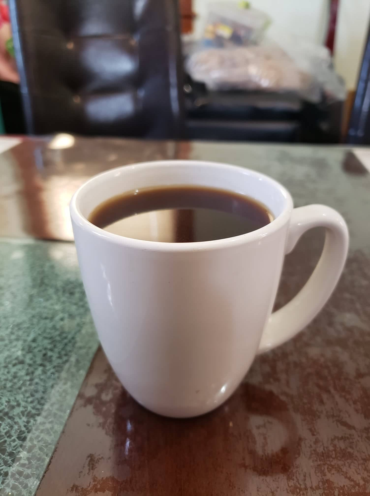

Café De Olla (Mexican Coffee)

Ingredients:
- 4 cups Water
- 3 oz Piloncillo
- 1 stick Cinnamon
- Optional: 3 inches Orange peel
- Optional: 1 Star anise or 1 tsp Anise seeds
- 4 tbsp Dark roast ground coffee
Instructions:
- Place the water, piloncillo, cinnamon, and any other flavorings into a large saucepan. Bring to a simmer and stir until the piloncillo is completely dissolved.
- Bring the water to a boil and then remove from heat. Stir in the coffee to combine.
- Cover pot and let steep for 5 minutes. Pour through a strainer to serve.